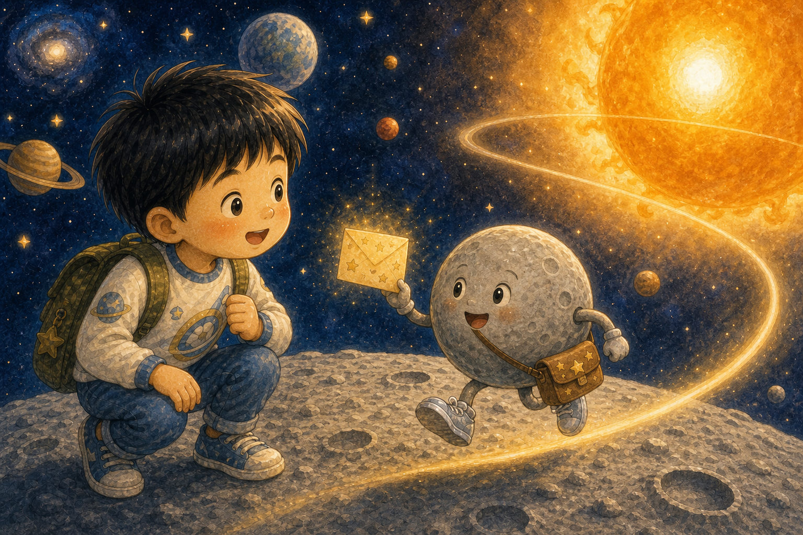
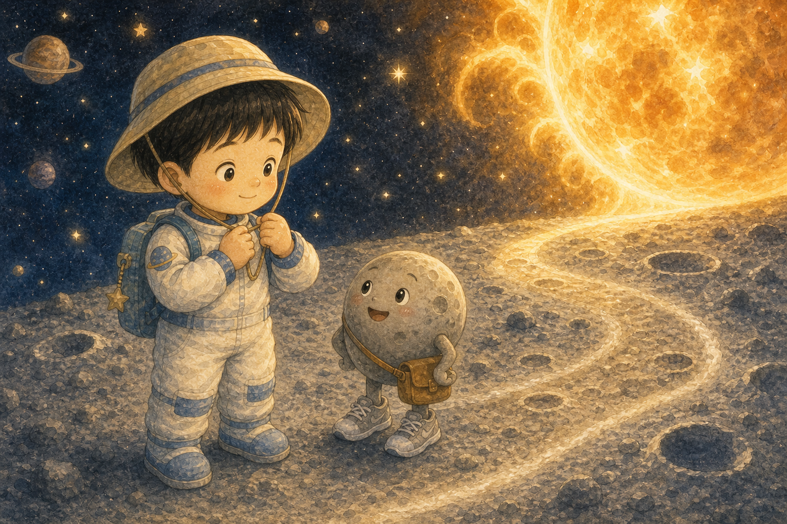
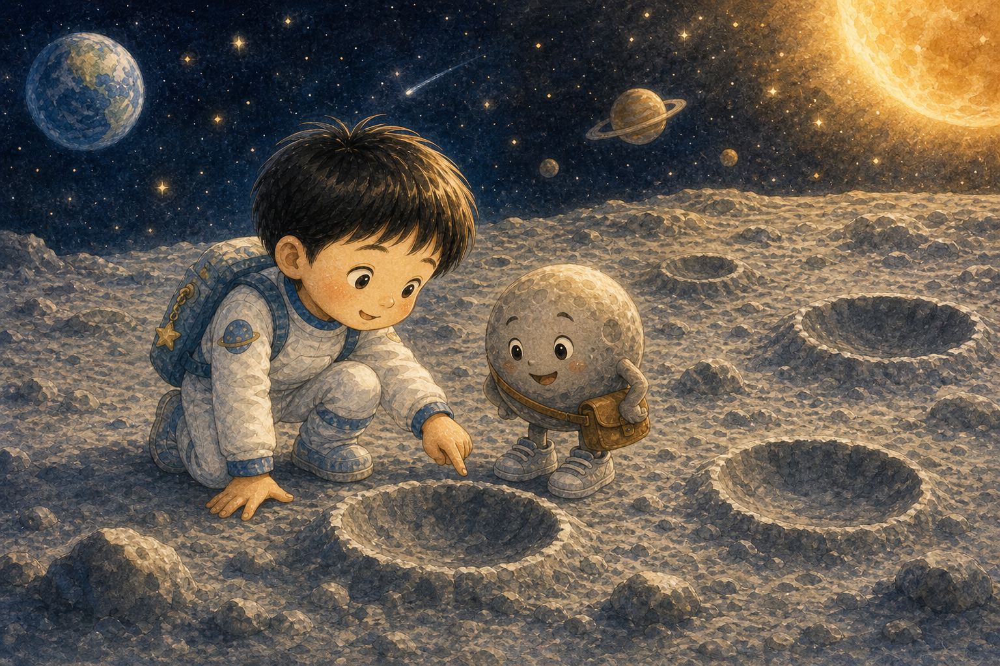
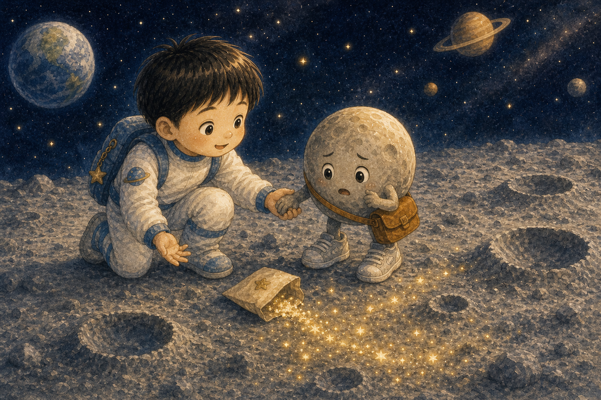
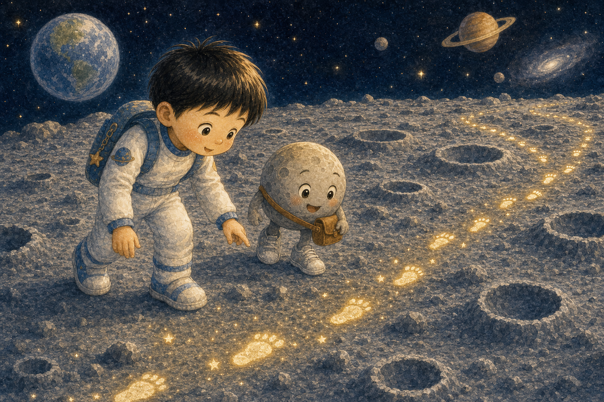
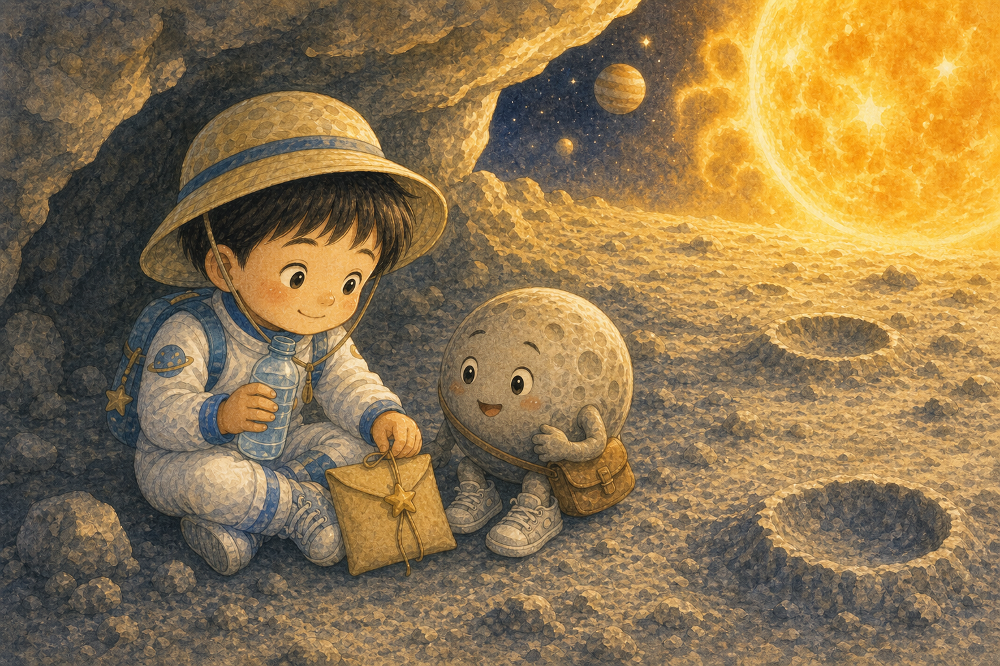
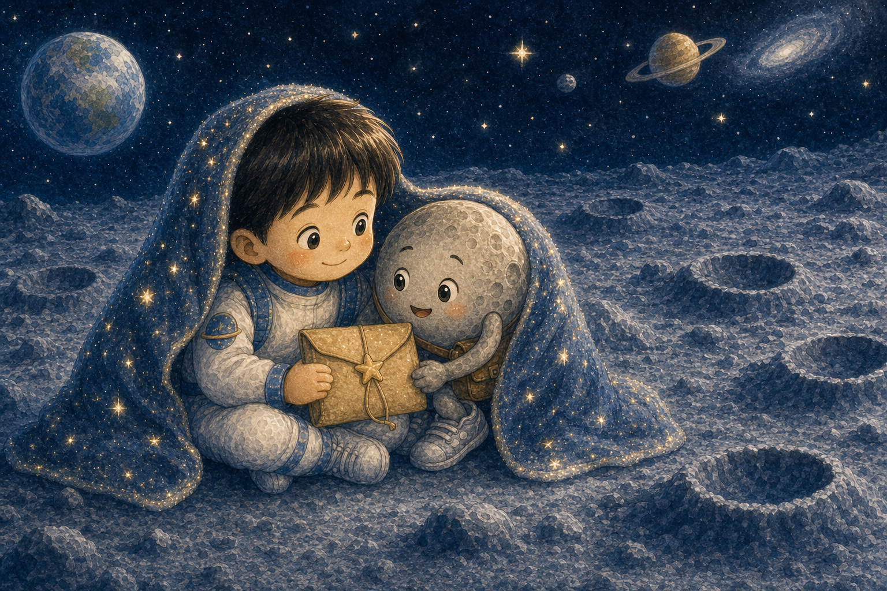
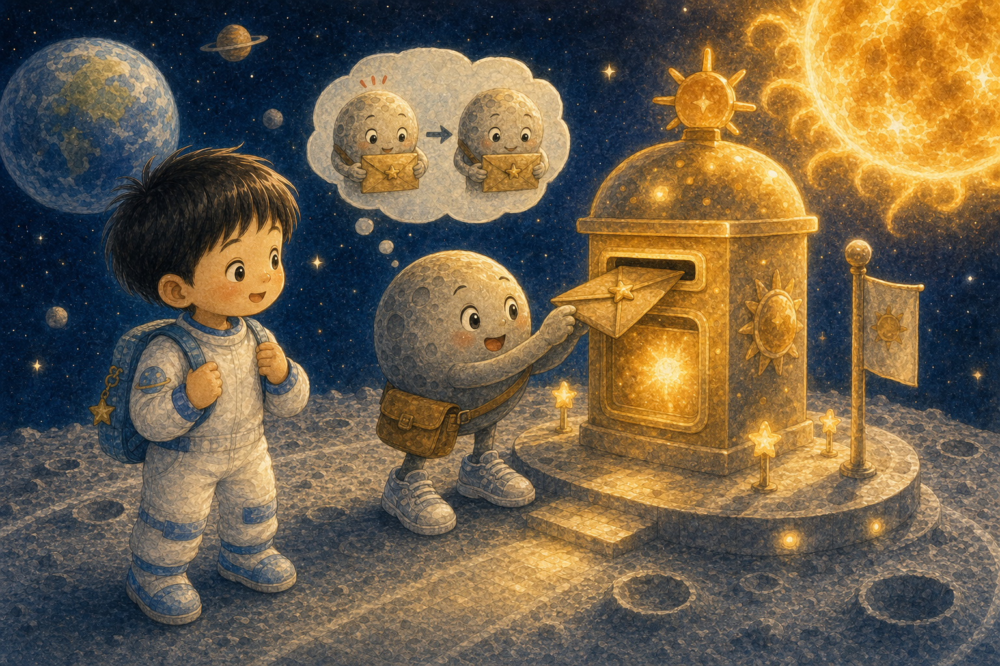
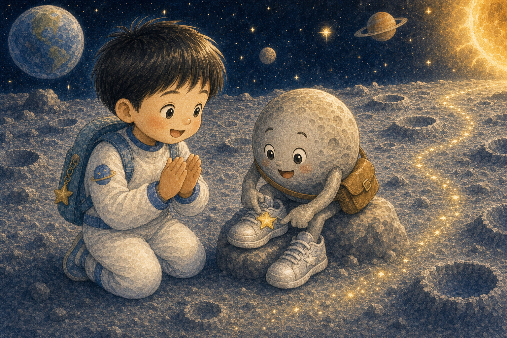
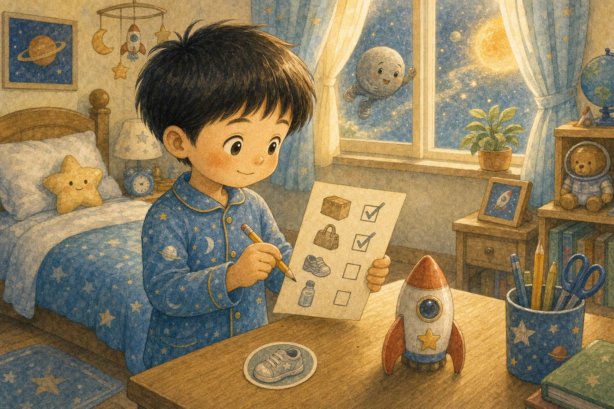

쌩쌩 운동화
하늘이는 꿈속에서 은빛 운동화를 신은 수성을 만났어요. 수성은 태양 둘레를 가장 빨리 도는 심부름꾼이었지요.
"빨리 다녀오는 건 내 특기야!"

하늘이는 꿈속에서 은빛 운동화를 신은 수성을 만났어요. 수성은 태양 둘레를 가장 빨리 도는 심부름꾼이었지요.
"빨리 다녀오는 건 내 특기야!"

수성은 태양 가까이에서 달렸어요. 하늘이는 가까운 길이 밝고 뜨겁다는 걸 느끼며 모자 끈을 꼭 묶었답니다.
가까운 곳일수록 더 조심해야 해요.

수성의 길에는 작은 구덩이가 많았어요. 하늘이는 그 구덩이들이 오래전 부딪힌 흔적이라는 설명을 들었지요.
상처처럼 보이는 곳에도 이야기가 있었어요.

수성이 너무 빨리 달리다 별가루 봉투를 떨어뜨렸어요. 하늘이는 "잠깐 멈춰서 찾아보자"라고 말했답니다.
빠른 마음에도 멈춤 버튼이 필요했어요.

하늘이와 수성은 구덩이 사이를 천천히 걸었어요. 그러자 별가루가 남긴 작은 반짝 발자국이 보였지요.
천천히 보니 길이 더 잘 보였어요.

태양 쪽으로 달리자 수성의 낮은 아주 뜨거웠어요. 하늘이는 물병을 꼭 쥐고 그늘을 찾아 쉬었답니다.
쉬어 가는 것도 여행의 한 부분이에요.

태양 반대쪽으로 가자 갑자기 차가운 밤이 찾아왔어요. 하늘이와 수성은 반짝 담요를 덮고 별가루 봉투를 지켰지요.
작은 행성에도 큰 변화가 있었어요.

수성은 이번에는 빨리 달리되 중간중간 확인했어요. 봉투는 한 번도 떨어지지 않고 태양 우체통에 도착했답니다.
빠름과 꼼꼼함이 함께 달렸어요.

수성은 운동화에 작은 별 스티커를 붙였어요. 스티커에는 "쌩쌩, 그리고 확인!"이라고 적혀 있었지요.
잘하는 것에 새 습관을 더하면 더 멋져져요.

아침에 깬 하늘이는 엄마의 심부름을 천천히 확인하며 해냈어요. 수성처럼 빠르게, 하지만 놓치지 않게요.
그날 하늘이의 발걸음도 반짝반짝 가벼웠답니다.